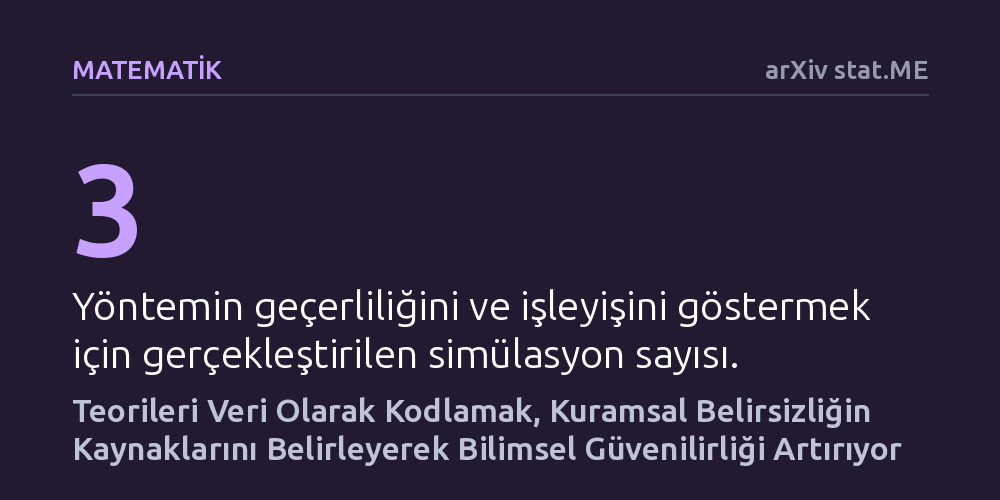

MATEMATIK · arXiv stat.ME · 2026-09-11
Bilimsel araştırmalardaki kuramsal belirsizliği ölçmek amacıyla teorileri önermeler mantığına dayalı nedensel ağlar olarak kodlayan yeni bir analiz yöntemi geliştirildi. Simülasyonlarla sınanan yöntem, alternatif teorik modeller havuzu üreterek araştırmacıların belirsizliğe yol açan noktaları matematiksel olarak saptamasını sağlıyor.
Bilimdeki tekrarlanamazlık krizinin yalnızca hatalı veri analizinden değil, teorilerin belirsiz kurulmasından da kaynaklandığını göstererek kuramların matematiksel olarak test edilmesinin önünü açıyor.

Son yıllarda bilim dünyasında sıkça tartışılan tekrarlanabilirlik krizi, genellikle verilerin hatalı işlenmesi, küçük örneklem boyutları veya istatistiksel çarpıtmalarla açıklanıyor. Ancak araştırmaların bağımsız olarak tekrarlanamamasının ardında çok daha temel bir sorun yatıyor: teorilerin kendisindeki belirsizlik. Bir doğa ya da toplum olgusunu açıklamak için öne sürülen kuramlar çoğu zaman sözel ifadelerle kuruluyor; bu durum aynı teoriden yola çıkan araştırmacıların tamamen farklı modeller kurmasına ve birbiriyle çelişen sonuçlara ulaşmasına yol açıyor.
Eğer bir teorinin ne öngördüğü matematiksel kesinlikte tanımlanmamışsa, o teoriyi verilerle test etmek de güvenilir olmaktan çıkıyor. Araştırmacılar aynı teoriyi savunduklarını düşünseler bile, analiz aşamasında farkında olmadan farklı varsayımları benimsiyor. Nate Breznau ve Hung H. V. Nguyen, işte bu kuramsal belirsizliği ölçülebilir ve çözülebilir bir araştırma nesnesine dönüştürmek için yola çıkıyor.
Yazarlar, geliştirdikleri ve 'Üst-Kuramsal Çoklu Evren Analizi' (MMA) adını verdikleri yöntemde alışılmışın dışında bir yol izliyor: Teorileri sadece test edilecek soyut fikirler olarak değil, bizzat incelenecek birer veri olarak ele alıyorlar. Bu yaklaşımda bir teorinin içerdiği tüm iddialar, önermeler mantığı kuralları kullanılarak değişkenler (düğümler) ve bu değişkenler arasındaki sebep-sonuç ilişkileri (kenarlar) şeklinde yapılandırılıyor.
Oluşturulan bu mantıksal yapılar daha sonra nedensel yol modelleri olarak işleniyor. Teorinin henüz bilinmeyen ya da üzerinde uzlaşılmamış bileşenleri de hesaba katıldığında, tek bir teoriden türetilebilecek tüm makul alternatif modellerden oluşan devasa bir kuramsal çoklu evren ortaya çıkıyor. Böylece araştırmacılar, istatistikte kullanılan çoklu evren analizi tekniklerini doğrudan teorilerin kendisini karşılaştırmak ve belirsizlik kaynaklarını saptamak için kullanabiliyor.
Araştırmacılar önerdikleri metodolojinin işlerliğini kanıtlamak için özel bir yazılım paketi geliştirdi ve üç farklı simülasyon senaryosu üzerinde denemeler yürüttü. Bu simülasyonlar, alternatif kuramsal modellerin sistematik biçimde üretilmesini ve aralarındaki farkların yeni geliştirilen metriklerle ölçülmesini sağladı.
Elde edilen bulgular, yöntemin kuramlar arasındaki belirsizliğin tam olarak hangi düğüm ya da nedensel ilişkiden kaynaklandığını net biçimde tespit edebildiğini gösterdi. Araştırmacılar artık bir teorik tartışmada uyuşmazlığın hangi varsayımdan doğduğunu matematiksel olarak görebiliyor; bu da belirsizliği gidermek için hangi kavramsal boşluğun doldurulması gerektiğini açıkça ortaya koyuyor.
Bu çalışma, bilim insanlarına sınırlı araştırma bütçelerini ve zamanlarını nereye harcamaları gerektiği konusunda stratejik bir kılavuz sunuyor. Teorik belirsizliğin kaynakları ölçülebildiğinde, araştırmacılar en çok kuşku yaratan nedensel bağları netleştirmeye odaklanabilir ve böylece bilimin güvenilirlik zeminini sağlamlaştırabilir.
Bununla birlikte, yöntemin başarısı teorilerin mantıksal ve nedensel ağlar halinde formüle edilebilmesine bağlıdır. Henüz gerçek dünya ampirik verilerinde kapsamlı şekilde test edilmemiş olan bu simülasyon temelli yaklaşım, gelecekte farklı disiplinlerdeki teorik çatışmaların çözülmesinde önemli bir zemin oluşturma potansiyeli taşımaktadır.